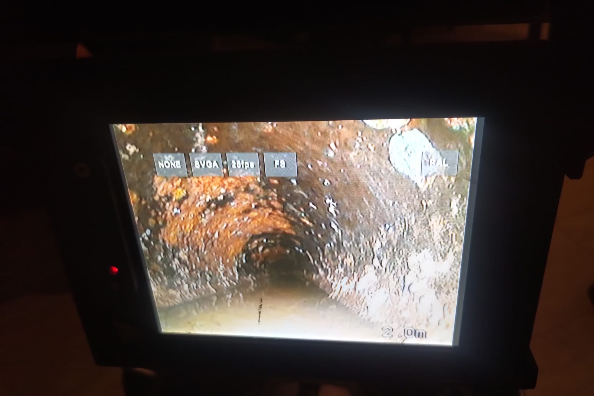
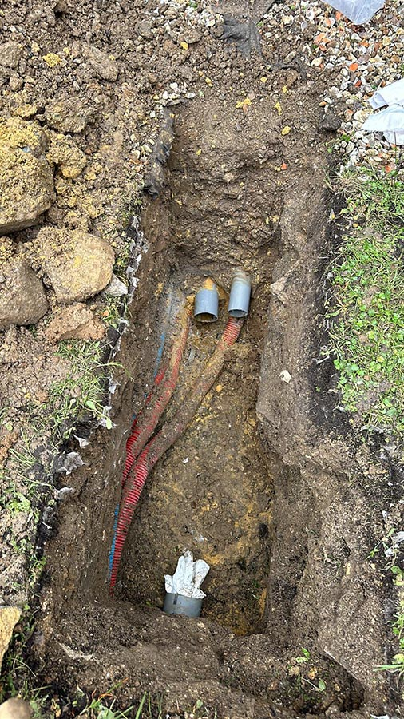

Caméra thermique
Elle montre les différences de température sur un mur ou un plafond. Elle aide à suivre le passage de l’eau.
Recherche, réparation et remise en état
Une tache au plafond, de l’eau dans la cave : A.T.C. BAT, entreprise tous corps d’état à Paris, cherche d’où vient la fuite avec caméra thermique, humidimètre et caméra d’inspection, puis s’occupe de la réparation et de la remise en état. Pour les syndics et les gestionnaires, comme pour les professionnels et les particuliers.
Zone d’intervention : tout Paris et la petite couronne (Hauts-de-Seine, Seine-Saint-Denis, Val-de-Marne), notamment Ivry-sur-Seine, Vitry-sur-Seine, Villejuif, Alfortville, Charenton-le-Pont, Maisons-Alfort et Le Kremlin-Bicêtre. Précisez la commune ou l’arrondissement de l’immeuble.
Voir notre matériel

Réponse immédiate sur WhatsApp
Extrêmement réactifs : vous êtes pris en charge dès réception de votre message.
Devis sous 24 h
Votre devis vous est envoyé dès que nous avons les informations nécessaires à l’intervention.
Dégât des eaux, infiltration, tache qui revient : avant de réparer, il faut trouver d’où vient l’eau.
Une fuite trouvée tôt, c’est moins de travaux à refaire.
Une auréole s’étend au plafond ou sur un mur.
L’eau coule au plafond du voisin du dessous.
La peinture cloque ou le parquet gonfle.
De l’eau coule dans la cave ou au pied d’une colonne.
L’eau entre par la toiture, une terrasse ou une verrière.
La fuite revient après une première réparation.
Nous commençons par observer et mesurer, sans ouvrir.
Le matériel dépend de ce que nous trouvons sur place.
Elle montre les différences de température sur un mur ou un plafond. Elle aide à suivre le passage de l’eau.

Il mesure l’humidité du mur, point par point, pour délimiter la zone touchée.

Elle entre dans la canalisation. L’image s’affiche en direct à l’écran : on voit l’état du tuyau de l’intérieur.

Il repère sous le sol le tracé et la profondeur d’un tuyau enterré.
Après la recherche, vous recevez un rapport avec photos, qui dit ce que nous avons trouvé et ce qu’il faut faire ensuite.
Envoyer l’adresse et les photosLe matériel ci-dessus sert à observer et à mesurer. Selon la situation et le besoin, nous ajoutons un ou plusieurs de ces tests, pour confirmer d’où vient l’eau.
Nous faisons couler l’eau dans une douche, une baignoire ou un évier, puis nous regardons si elle passe en dessous. Le test vérifie un receveur, un joint ou une évacuation.
La fluorescéine est un colorant qui brille sous une lampe à ultraviolets. Ajoutée à l’eau d’un test, elle montre où cette eau ressort.
Nous mettons le réseau d’eau sous pression, puis nous suivons la pression : si elle baisse, le réseau fuit.
Un gaz envoyé dans une arrivée d’eau ressort par la fuite, et un détecteur le repère à travers le sol ou le mur. Il aide à situer une fuite sur un tuyau encastré ou enterré.
Sur un réseau sous pression, une fuite fait du bruit. Un appareil d’écoute aide à repérer l’endroit, sans ouvrir.
Une fumée montre par où l’air passe. Nous nous en servons pour vérifier une ventilation : une pièce humide manque parfois d’aération, sans aucune fuite.
Pas toujours. Selon le réseau et les accès, la fuite se trouve sans ouvrir, ou demande une ouverture.
Quand la fuite est dans un mur ou sous un sol, nous ouvrons à l’endroit repéré. Nous refermons ensuite et remettons en état : vous gardez le même interlocuteur.
De la recherche à la remise en état, dans les mêmes WC.
Coulures sur le mur, ouverture, puis remplacement de la fonte.
Dans les parties communes comme dans les logements : réseaux enterrés, toitures, colonnes, salles de bains.

Sous une cour, un jardin ou le sol d’une cave. Nous repérons le tracé du tuyau, puis l’endroit de la fuite.
De l’eau dans la cave : trouver la canalisation qui fuit
L’eau entre souvent loin de la tache. Sur une verrière, l’eau colorée montre par où elle passe.
Voir la recherche de fuite sur toiture
Colonnes en fonte, descentes, évacuations : la caméra d’inspection montre l’intérieur du tuyau.
Réparer ou remplacer une colonne d’immeuble
Douche, baignoire ou chasse d’eau de WC : une mise en eau montre si l’eau s’échappe.
Fuite sous une douche à l’italienne : les causes et le testDans un immeuble ancien, l’eau peut courir dans un plancher, le long d’une colonne ou dans une gaine avant de marquer un plafond. La tache n’est donc pas toujours sous la fuite.
Créée en 2017 à Paris, A.T.C. BAT est une entreprise de recherche de fuite et de travaux. Dans ces immeubles, voici ce que nous regardons.
L’eau peut passer dans le plancher ou dans un coffrage avant d’apparaître. Nous suivons son trajet à l’humidimètre et à la caméra thermique, d’un logement à l’autre.
Les colonnes d’eau et d’évacuation montent d’étage en étage, dans des gaines ou le long des murs. Partie commune ou privative : c’est d’abord le règlement de copropriété qui le dit.
L’eau dans une cave peut venir d’une canalisation enterrée, du pied d’une colonne ou d’un regard. Nous repérons d’abord le tracé des tuyaux.
Le compteur général est au pied de l’immeuble. La responsabilité d’Eau de Paris s’arrête juste après le robinet d’arrêt qui suit ce compteur : au-delà, le réseau est celui de l’immeuble. Quand l’immeuble a des compteurs individuels, ils sont posés sur la colonne montante, en priorité sur les paliers.
Un cas réel : dans un avis reproduit plus bas, un client qui gère une société de bâtiment raconte une fuite sur une canalisation prise dans le sol, entre deux étages, que personne n’avait trouvée jusque-là.
Nous travaillons principalement pour les syndics et les gestionnaires, dans les parties communes comme dans les logements.
Une fuite ou des dommages dans votre immeuble ? Nous organisons la recherche, la réparation et la remise en état.
Pour lancer la recherche, envoyez sur WhatsApp ou par mail :
A.T.C. BAT est une entreprise tous corps d’état. Nous réparons ce qui fuit : canalisation, colonne en fonte, réseau d’évacuation, étanchéité d’une toiture ou d’une douche.
Puis nous remettons en état les sols, les murs, la peinture et l’électricité. Un interlocuteur suit le dossier, du premier échange aux finitions.
Je m’appelle Joseph, je gère une société de bâtiment. Régulièrement j’ai des problématiques insolubles de fuite et de recherche de fuite dans des bâtiments. La société ATC BAT m’a permis la dernière fois de trouver une fuite d’une canalisation intégrée entre deux étages dans le sol à un endroit tellement improbable que personne n’avait trouvé jusqu’à présent.
Donc ce n’est pas la première fuite qu’ils nous trouvent, ils font vraiment très bien le job, ce ne sont pas les moins chers. Par contre quand vous avez un problème à résoudre ils vous trouvent la solution.
Avis publié sur Google, reproduit sans modification
Etant propriétaire, je fais régulièrement des travaux avec la société ATC BAT depuis deux ans, ils sont intervenus pour des infiltrations dans la toiture, fuite d'eau, rénovation, conseils DPE... C'est une société très performante au service des professionnels et des propriétaires avec des conseils très avisés. Je suis totalement satisfaite.
Avis publié sur Google, reproduit sans modification
Nous commençons par observer et mesurer, sans ouvrir : caméra thermique, humidimètre, caméra d’inspection ou détecteur, et des tests à l’eau selon le cas. Quand la fuite est dans un mur ou sous un sol, nous ouvrons à l’endroit repéré, puis nous refermons et remettons en état.
Comment se déroule une recherche de fuite en copropriétéCelles qui conviennent à votre fuite. En plus de la caméra thermique, de l’humidimètre et de la caméra d’inspection, nous faisons, selon la situation et le besoin, une mise en eau, une mise en pression, un test à la fluorescéine ou au gaz traceur, une écoute acoustique ou un test au fumigène.
Nos méthodes, selon la situationLe prix dépend du réseau en cause, des accès et des tests à faire. Envoyez-nous l’adresse et des photos : votre devis vous est envoyé dès que nous avons les informations nécessaires à l’intervention.
Ce qui fait varier le prix d’une recherche de fuiteTout dépend de l’endroit où se trouve la fuite : dans une partie commune ou dans un logement. La recherche sert justement à le savoir.
Qui organise et qui paie la recherche de fuite Canalisation : partie commune ou privative, où passe la limiteCe que nous avons trouvé, avec les photos, et ce qu’il faut faire ensuite. Si l’origine n’est pas encore confirmée, le rapport le dit et indique la suite : seconde visite, accès à un autre logement.
Ce qu’un rapport de recherche de fuite doit contenirNotre service de dépannage est disponible 7 j/7, 24 h/24, pour une fuite d’eau. Pour une recherche de fuite, écrivez-nous sur WhatsApp, même le week-end : la réponse est immédiate.
Voir notre service de dépannageNous intervenons à Paris et en première couronne : Hauts-de-Seine (92), Seine-Saint-Denis (93) et Val-de-Marne (94).
Décrivez la fuite ou les travaux et indiquez le lieu d’intervention. Vous pouvez aussi nous écrire directement par mail.
Pour une réponse rapide : appelez le 06 74 79 07 77 ou écrivez sur WhatsApp
Vos informations servent seulement à répondre à votre demande. Nous les gardons trois ans au plus.
Vos données et vos droitsEnvoyez-nous les informations sur la fuite ou les travaux, avec vos photos. Nous préparons la suite avec vous.
06 74 79 07 77